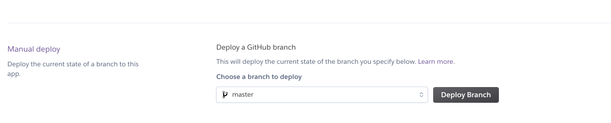

Objectives
Deploy a Play Application to the cloud
Setup.
We need an account on a new service to get our Play Application live in the Cloud. Visit this site:
And sign up for a new account.
Once confirmed, log in and go you your Dashboard:
This is a Platform as a Service provided (PaaS), you can read about PaaS here:
We will be using this service to get our Play Applications Live.
Preparing the Play Application for Deployment
In order to deploy the application using the Heroku service, you will need to have a copy of the application in github. Labs 12a and 12b walk though the process of doing this.
The rest of this lab assumes you have a complete repository pushed to github. There are a small number of changes we will make to the project (which we will also commit and push).
These are the main (small) adjustment we need to make:
- JDK Version
- Play Version
- Database Settings
- Production Mode
(1)JDK Version
Create a new file in the project root:
system.properties
java.runtime.version=8This sets the JDK version our app will need when deployed. It might be simplest to use Sublime to create this file - alternatively, you will need to switch to 'Project Files' mode to be able to create and save the file to the correct location.
(2) Play Version
Locate this file:
conf/dependencies.yml
# Application dependencies
require:
- playChange it to the following:
# Application dependencies
require:
- play 1.5.2
- org.postgresql -> postgresql 42.2.2:
force: trueThis determines the precise version of Play + the database drivers it should use.
(3) Database Settings
We also need to set the database connection configuration to use when deployed. Open application.conf and locate the following line:
conf/application.conf
db.default=memComment out this line by placing a # in the first line:
# db.default=memInsert the following directly below:
db=${DATABASE_URL}
jpa.dialect=org.hibernate.dialect.PostgreSQLDialect
jpa.ddl=updateNB: This very last change will mean that YOUR APP WILL NO LONGER RUN LOCALLY! (apologies for the caps). So you will need to reverse the very last change if you want to run locally again.
(4) Production Mode
Also 'application.conf' - at the top of the file we have this:
# Application mode
#
# Set to dev to enable instant reloading and other development help.
# Otherwise set to prod.
application.mode=dev
%prod.application.mode=prodThis needs to be changed to this:
# Application mode
#
# Set to dev to enable instant reloading and other development help.
# Otherwise set to prod.
#application.mode=dev
prod.application.mode=prodWe are enabling 'production mode' for deployment.
All of the above changes need to be committed, and the pushed to git.
Creating & Configure the Application on Heroku
Now we need to create and configure the application on Heroku:
- Create App
- Link to Github repo
- Configure Buildpack
(1) Create Application
Back in the Heroku
Log in and you should see the main Dashboard:

Select 'New` and create a new application.

Give the app a name - this will have to be unique, so perhaps consider using your initials or name in the application name:
You might also locate the app in Europe. Press Create App and an application console will be displayed:
(2) Link to Github
One of the options is Github - Connect to github ... press it and you will be asked to authorise to Github, and grant heroku access to your account.
Proceed to do this and your dashboard should look something like this:
(3) Configure Buildpack
We are now almost ready to deploy. We need to do one more step. Back in Heroku, switch to the Settings panel:
Press the Add Buildpack:

In the above, we have added this url:
https://github.com/heroku/heroku-buildpack-playSave changes and the buildpack should be installed:

The build pack is needed to inform Heroku how a play app is configured and managed.
Deploy the Application
Back in the Deploy panel - we can now press the Deploy Branch button.

This will take a minute or so - and pressing the 'show build logs' button will let you see more details on its progress...
Switch to the 'Settings Panel' and under 'Domains & Certificates' you will see the url of the deployed application:
Try the app now -

Log in as homer@simpson.com, secret


You should be able to ad and remove todos. Log out, sign up a new user etc...
Logs
Back in the Heroku Console - select more on the top right:

Select View logs.
This is the equivalent of the console when you were running the app locally on your workstation. When testing the deployed application it is useful to always keep this view open. It enables you to monitor the application, identify potential errors and generally keep an eye on its operation.
You now have 2 versions of the source of your application
- The version you are developing using IDEA
- A copy of the application on a synced to github.
Running Locally
This change you made to conf/application.conf:
conf/application.conf
# db.default=mem
db=${DATABASE_URL}
jpa.dialect=org.hibernate.dialect.PostgreSQLDialect
jpa.ddl=updateWill prevent you from running the application locally. i.e. it will fail to launch when running via the play run command. Therefore, for the version of the application you are editing via IDEA, make suer to reverse the changes if you wish to run locally:
db.default=mem
# db=${DATABASE_URL}
# jpa.dialect=org.hibernate.dialect.PostgreSQLDialect
# jpa.ddl=updateHowever, if you commit and push this version, then it will run successfully if you deploy from github again.
You may also with to reverse this change
# Application mode
#
# Set to dev to enable instant reloading and other development help.
# Otherwise set to prod.
#application.mode=dev
prod.application.mode=prodSo that it is in dev mode when running locally.
Database Dashboard
If you have been relying on this link:
...to view the browser when running locally - this will NOT work for the deployed version.
However, Heroku supports an add-on called Adminium which called fulfils a similiar role. To install, locate the 'Find more add-ons' button on the Resources dashboard screen:
Press this button and locate the plugin:
Install the plugin:
Select your app in the provision field:
The plugin should be listed in your 'Resources' panel.
Pressing 'Adminium' will take you to the this interface:
Once connected - you will eventually be able to browse its models like this:
You will even be able to edit the contents.
You will also be able to add tables to a Dashboard :

The dashboard is available at this url:

There are additional Widgets you can experiment with here to monitor database activity over time.
Exercises
Exercise 1: Deploy Playlist 5
Deploy the latest playlist application:
You will need to follow precisely steps 02, 03 and 04 from this lab.
Exercise 2: Workspace
See if you can arrange your workspace like this:

Here we are monitoring the deploy logs, the main application logs, the database console and the application itself (including the browser tools).
Try some variation of this now and get familiar with the nature of the information in each of the windows. Proceed through a deploy cycle while doing this (make a cosmetic change to the app in dropbox to allow a deploy to be triggered)